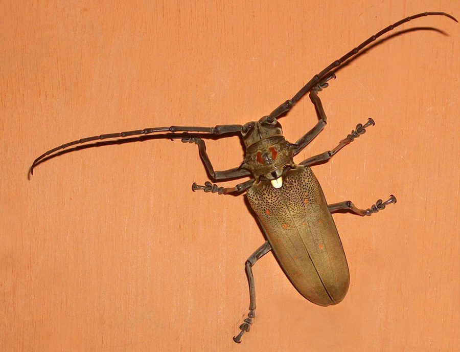

आम का तना छेदकMango Stem Borer
Batocera rufomaculata · Cerambycidae · INS-0106

- Scientific nameवैज्ञानिक नाम
- Batocera rufomaculata (Fabricius, 1801)
- Familyकुल
- Cerambycidae
- Hindiहिंदी
- आम का तना छेदक
- Local namesस्थानीय नाम
- mango stem borer, aam ka tana chhedak, tana chhedak, stem borer
- Status hereयहाँ की स्थिति
- native
- Movementआवागमन
- Resident, here all year
- IUCNIUCN
- not evaluated
- Reviewसमीक्षा
- audited and independently read
When to look कब देखें
Present all year.साल भर मौजूद।
आम का तना छेदक / Mango Stem Borer
Batocera rufomaculata (Fabricius, 1801) — Cerambycidae
आम का तना छेदक — पूर्वी उत्तर प्रदेश के आम के बागों में पाया जाने वाला एक बड़ा, काले रंग का भृंग (beetle) है। इसकी लंबी एंटीना (भौं) बहुत लंबी होती हैं। इसकी इल्ली (larva) आम के तने और शाखाओं के अंदर सुरंगें खोदती है, जिससे पेड़ों को बहुत नुकसान होता है। इसके हमले से पेड़ की शाखाएँ मर जाती हैं या पेड़ का सारा भाग सूख सकता है। यह गर्मी और बरसात के मौसम में अधिक सक्रिय होता है। छोटे पेड़ और कमज़ोर पेड़ों के लिए यह कीट बहुत ख़तरनाक होता है।
Quick Identification त्वरित पहचान
| Feature | Description |
|---|---|
| Beetle Size | Large, robust beetle (30–50 mm length) |
| Beetle Colour | Black or dark brown with reddish-brown markings on elytra (wing covers) |
| Antennae | Very long, extending beyond the body length; segmented and filiform |
| Elytra | Parallel-sided; with scattered reddish-brown spots or patches giving a mottled appearance |
| Larval Bore Holes | Large, round or oval exit holes (8–15 mm diameter) in stems and branches |
| Frass | Large, cylindrical wood chips and sawdust around exit holes |
Field tip: Look for large, round exit holes (larger than a pencil) in mango tree stems and branches, with sawdust and wood chips around them. The frass is coarse and granular. Adult beetles are large, black with reddish markings, with very long antennae exceeding body length.
Morphology आकारिकी
Biometrics (typical measurements):
| Stage / Part | Measurement |
|---|---|
| Adult beetle length | 30–50 mm |
| Adult beetle width | 8–12 mm |
| Antenna length | 40–60 mm (longer than body) |
| Exit hole diameter | 8–15 mm |
| Mature larval length | 40–50 mm |
Adult Beetle: Large, robust longhorn beetle. Head is black; pronotum is black with reddish patches. The elytra (wing covers) are black or dark brown with reddish-brown spots, patches, or bands giving a mottled appearance. The body is covered with fine pubescence. The most distinctive feature is the very long antennae, which are longer than the body length, segmented, and dark-coloured.
Larva: Wood-boring, pale yellowish or cream-coloured, robust and elongated, reaching 40–50 mm at maturity. The head is small, partially retracted into the prothorax. The body is somewhat flattened and cylindrical.
Pupa: Formed in a pupal chamber within the wood; encased in a cocoon of wood chips and silk.
Larval Stage
The larval stage is wood-boring and occurs entirely within the host plant.
- Newly hatched larva: Tiny (1–2 mm), pale, begins boring into the wood immediately.
- Larval tunnels: Create extensive galleries and tunnels within the wood.
- Mature larva: Large (40–50 mm), pale yellowish, remains in the wood.
- Pupation: Larvae prepare a pupal chamber within the wood, lining it with frass and wood chips.
- Duration: 6 months to over one year depending on wood quality and temperature.
Behaviour & Ecology व्यवहार और पारिस्थितिकी
Polyphagous wood borer and pest of fruit trees. The Mango Stem Borer is the most important pest of mango trees in India. The beetles are attracted to stressed, newly felled, or otherwise weakened trees. After emerging from the wood, adult beetles mate, and females lay eggs in crevices and bark of suitable trees. Larvae bore into the wood and spend 6 months to over one year developing inside, creating extensive tunnel systems that weaken the structural integrity of stems and branches. The species is monoxenous (highly specific to certain host plants) with mango (Mangifera indica) being the primary host, though other woody plants can be infested.
Life Cycle / Phenology जीवन चक्र
- Reproduction: Multiple generations per year (typically 1–2) depending on climate and larval development time.
- Adult flight period: Peak emergence during monsoon and early post-monsoon (June to October).
- Oviposition: Females lay eggs in bark crevices, at branch junctions, or on damaged areas of tree stems.
- Developmental timeline:
- Egg incubation: 7–14 days.
- Larval period: 6 months to over 1 year in the wood, depending on temperature and food quality.
- Pupation: 14–21 days in a pupal chamber within the wood.
- Adult lifespan: 3–6 weeks; mostly active during the monsoon.
Host Plants or Prey आहार
Primary host plant:
- Mangifera indica (Mango / आम) — preferred and primary host
Secondary and alternative hosts:
- Tamarindus indicus (Tamarind / इमली)
- Psidium guajava (Guava / अमरूद)
- Other woody species (occasional infestation)
Development is primarily in mango and related large-stemmed woody plants.
Predators / Natural Enemies शत्रु
- Parasitoid Wasps: Small wasps parasitize eggs and larvae (research ongoing).
- Predatory beetles: Ground beetles and bark beetles predate eggs and larvae.
- Woodpeckers: May feed on exposed larvae.
- Nematodes: Entomopathogenic nematodes can parasitize larvae in some cases.
Agricultural / Human Relevance कृषि प्रासंगिकता
Major agricultural pest. The Mango Stem Borer is the most important pest of mango trees in eastern India and a major threat to mango production. Infested trees show visible wilting of branches, oozing gum, and eventual death of severely infested branches or the entire tree. The damage is particularly severe in young orchards and nurseries.
Control methods:
- Cultural control: Removal and destruction of infested wood; pruning of affected branches; maintaining tree health through irrigation and nutrition to prevent infestation.
- Mechanical control: Insertion of wire probes into bore holes to kill larvae; application of pesticides into exit holes using injection techniques.
- Chemical control: Stem-wrapping with insecticidal materials; injection of systemic insecticides into stems.
- Biological control: Research on parasitoid wasps and entomopathogenic fungi is ongoing but not yet widely implemented.
Expected Locally स्थानीय रूप से अपेक्षित
Not a field record. Written from published accounts for eastern Uttar Pradesh. No confirmed local sighting yet — if you have seen it, that is what the atlas needs.
अभी तक स्थानीय पुष्टि नहीं। यह विवरण प्रकाशित स्रोतों से है, किसी अवलोकन से नहीं।
The Mango Stem Borer should be expected in Basti district in all mango orchards, particularly in older orchards or areas with stressed trees. Look for large, round exit holes (larger than a pencil) in mango stems and branches with coarse sawdust and wood chips around them. Infested branches show wilting and dieback. Peak adult emergence occurs during monsoon (June to October). Young trees and nurseries require special attention for infestation monitoring. Farmers should implement integrated management including pruning of infested branches, debris removal, and judicious use of insecticides. The first documented local record would be valuable for understanding pest distribution; send observations to the atlas contact on the About page.
Distribution वितरण
Global range: South and Southeast Asia, including India, Sri Lanka, Myanmar, Thailand, Indonesia, and parts of China.
In India: Widespread across mango-growing regions, particularly in peninsular and eastern India.
In Uttar Pradesh: Present in all mango-growing districts including eastern UP.
In Basti district / eastern UP: Expected in all mango orchards and areas with suitable host trees.
Research Questions शोध प्रश्न
Anyone can investigate these | कोई भी इन प्रश्नों की जाँच कर सकता है
- What is the percentage of mature mango trees infested with Batocera rufomaculata in different blocks of Basti? — Survey orchards and record infestation levels.
- How effective are different injection-based insecticide treatments in killing larvae inside stems? — Conduct trials with different treatments and monitor larval mortality.
- What percentage of emerging adult beetles successfully escape from a single infested tree? — Capture emerging beetles and count.
- Do mango varieties show differential susceptibility to Batocera infestation? / क्या आम की विभिन्न किस्मों में बटोसेरा का संक्रमण अलग-अलग दर पर होता है? — Compare infestation rates on different varieties.
- What is the effectiveness of native parasitoid wasps or fungi in controlling larvae? — Collect larvae and monitor for parasitoid or fungal emergence.
Similar Species मिलती-जुलती प्रजातियाँ
| Species | How to tell apart | हिंदी |
|---|---|---|
| Teak Wood Borer (Xyleborinus saxesenii) | Much smaller beetle; smaller exit holes (2–3 mm); different host preference (teak, not mango) | सागौन का भृंग — छोटा |
| Fig Wood Borer (Xyleborus fornicatus) | Smaller; different habitat (figs); smaller bore holes | अंजीर का भृंग — छोटा |
Field rule: Large black beetle with reddish-brown markings and very long antennae exceeding body length, emerging from large exit holes in mango stems, is the Mango Stem Borer.
Taxonomy & Classification वर्गीकरण
Original description. Johann Christian Fabricius described the Mango Stem Borer as Cerambyx rufomaculatus in 1801 in his Systema Antliatorum (p. 165). The type locality is India. The genus Batocera was established by Thomson in 1868. The species name rufomaculata refers to the reddish-brown spots or patches (rufus = reddish, maculata = spotted).
Subspecies. The nominate subspecies B. r. rufomaculata occurs in India and UP.
Family and order placement. Order Coleoptera, family Cerambycidae (longhorn beetles or long-horned beetles).
Phylogenetic notes. Batocera is an Old World genus of large wood-boring cerambycid beetles, with several species being important forest and crop pests.
IUCN status rationale. Not evaluated (NE) by the IUCN Red List. A native insect but considered a major agricultural pest in the region.
Photo Gallery फोटो गैलरी
No photos yet — add field photos to media/species/mango_stem_borer/ and run node scripts/sync_photos.js.
Photos needed आवश्यक फोटो
- [ ] Adult beetle (भृंग)
- [ ] Exit holes in mango stem (तने में छेद)
- [ ] Frass and damage (नुकसान)
References संदर्भ
- Fabricius, J.C. (1801). Systema Antliatorum. Brunsvigae, p. 165. [original description]
- Atwal, A.S. & Dhaliwal, G.S. (2015). Agricultural Pests of South Asia and Their Management. Kalyani Publishers, New Delhi.
- David, B.V. & Ramamurthy, V.V. (2016). Elements of Economic Entomology. Namrutha Publications, Chennai.
- Choudhury, S.C. & Patra, A.K. (2014). Occurrence and damage potential of Batocera rufomaculata F. (Coleoptera: Cerambycidae) on mango in eastern India. Indian Journal of Entomology 74(1): 65–72.
- CABI Crop Protection Compendium (2024). Batocera rufomaculata (mango stem borer) datasheet.
- GBIF Occurrence Data — Batocera rufomaculata, Uttar Pradesh (2010–2025).
Source file: species/fauna/insects/mango_stem_borer.md